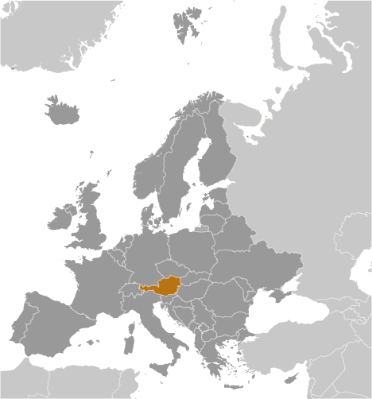
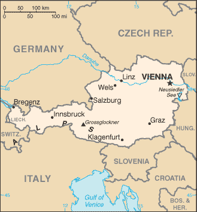
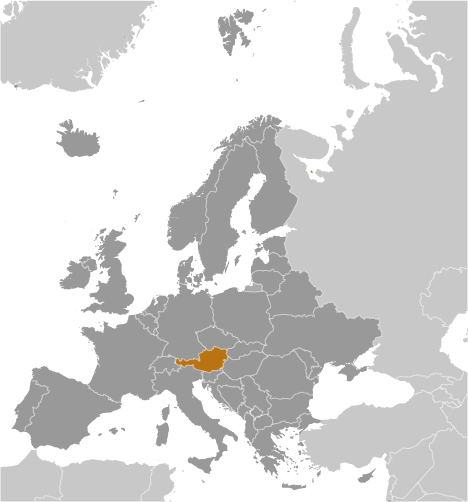
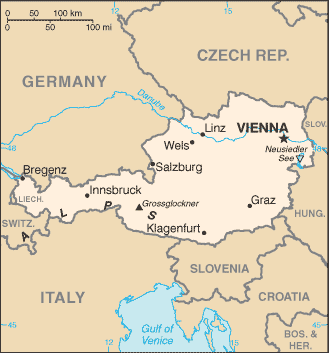

Europe :: AUSTRIA
Introduction :: AUSTRIA
-
Once the center of power for the large Austro-Hungarian Empire, Austria was reduced to a small republic after its defeat in World War I. Following annexation by Nazi Germany in 1938 and subsequent occupation by the victorious Allies in 1945, Austria's status remained unclear for a decade. A State Treaty signed in 1955 ended the occupation, recognized Austria's independence, and forbade unification with Germany. A constitutional law that same year declared the country's "perpetual neutrality" as a condition for Soviet military withdrawal. The Soviet Union's collapse in 1991 and Austria's entry into the EU in 1995 have altered the meaning of this neutrality. A prosperous, democratic country, Austria entered the EU Economic and Monetary Union in 1999.
Geography :: AUSTRIA
-
Central Europe, north of Italy and Slovenia47 20 N, 13 20 EEuropetotal: 83,871 sq kmland: 82,445 sq kmwater: 1,426 sq kmcountry comparison to the world: 115about the size of South Carolina; slightly more than two-thirds the size of Pennsylvaniatotal: 2,524 kmborder countries (8): Czech Republic 402 km, Germany 801 km, Hungary 321 km, Italy 404 km, Liechtenstein 34 km, Slovakia 105 km, Slovenia 299 km, Switzerland 158 km0 km (landlocked)none (landlocked)temperate; continental, cloudy; cold winters with frequent rain and some snow in lowlands and snow in mountains; moderate summers with occasional showersmostly mountains (Alps) in the west and south; mostly flat or gently sloping along the eastern and northern marginsmean elevation: 910 melevation extremes: lowest point: Neusiedler See 115 mhighest point: Grossglockner 3,798 moil, coal, lignite, timber, iron ore, copper, zinc, antimony, magnesite, tungsten, graphite, salt, hydropoweragricultural land: 38.4%arable land 16.5%; permanent crops 0.8%; permanent pasture 21.1%forest: 47.2%other: 14.4% (2011 est.)1,170 sq km (2012)the northern and eastern portions of the country are more densely populated; nearly two-thirds of the populace lives in urban areaslandslides; avalanches; earthquakessome forest degradation caused by air and soil pollution; soil pollution results from the use of agricultural chemicals; air pollution results from emissions by coal- and oil-fired power stations and industrial plants and from trucks transiting Austria between northern and southern Europeparty to: Air Pollution, Air Pollution-Nitrogen Oxides, Air Pollution-Persistent Organic Pollutants, Air Pollution-Sulfur 85, Air Pollution-Sulphur 94, Air Pollution-Volatile Organic Compounds, Antarctic Treaty, Biodiversity, Climate Change, Climate Change-Kyoto Protocol, Desertification, Endangered Species, Environmental Modification, Hazardous Wastes, Law of the Sea, Ozone Layer Protection, Ship Pollution, Tropical Timber 83, Tropical Timber 94, Wetlands, Whalingsigned, but not ratified: none of the selected agreementslandlocked; strategic location at the crossroads of central Europe with many easily traversable Alpine passes and valleys; major river is the Danube; population is concentrated on eastern lowlands because of steep slopes, poor soils, and low temperatures elsewhere
People and Society :: AUSTRIA
-
8,754,413 (July 2017 est.)country comparison to the world: 95noun: Austrian(s)adjective: AustrianAustrians 91.1%, former Yugoslavs 4% (includes Croatians, Slovenes, Serbs, and Bosniaks), Turks 1.6%, Germans 0.9%, other or unspecified 2.4% (2001 census)German (official nationwide) 88.6%, Turkish 2.3%, Serbian 2.2%, Croatian (official in Burgenland) 1.6%, other (includes Slovene, official in South Carinthia, and Hungarian, official in Burgenland) 5.3% (2001 est.)Catholic 73.8% (includes Roman Catholic 73.6%, other Catholic 0.2%), Protestant 4.9%, Muslim 4.2%, Orthodox 2.2%, other 0.8% (includes other Christian), none 12%, unspecified 2% (2001 est.)0-14 years: 14.01% (male 628,205/female 598,519)15-24 years: 11.07% (male 494,016/female 475,500)25-54 years: 42.42% (male 1,856,532/female 1,856,937)55-64 years: 13.23% (male 574,570/female 584,022)65 years and over: 19.26% (male 731,126/female 954,986) (2017 est.)total dependency ratio: 49.2youth dependency ratio: 21.1elderly dependency ratio: 28.1potential support ratio: 3.6 (2015 est.)total: 44 yearsmale: 42.8 yearsfemale: 45.1 years (2017 est.)country comparison to the world: 120.47% (2017 est.)country comparison to the world: 1569.5 births/1,000 population (2017 est.)country comparison to the world: 2019.6 deaths/1,000 population (2017 est.)country comparison to the world: 504.8 migrant(s)/1,000 population (2017 est.)country comparison to the world: 26the northern and eastern portions of the country are more densely populated; nearly two-thirds of the populace lives in urban areasurban population: 66.1% of total population (2017)rate of urbanization: 0.51% annual rate of change (2015-20 est.)VIENNA (capital) 1.753 million (2015)at birth: 1.05 male(s)/female0-14 years: 1.05 male(s)/female15-24 years: 1.04 male(s)/female25-54 years: 1 male(s)/female55-64 years: 0.98 male(s)/female65 years and over: 0.76 male(s)/femaletotal population: 0.96 male(s)/female (2016 est.)29 years (2014 est.)4 deaths/100,000 live births (2015 est.)country comparison to the world: 175total: 3.4 deaths/1,000 live birthsmale: 3.8 deaths/1,000 live birthsfemale: 3 deaths/1,000 live births (2017 est.)country comparison to the world: 208total population: 81.6 yearsmale: 78.9 yearsfemale: 84.4 years (2017 est.)country comparison to the world: 231.47 children born/woman (2017 est.)country comparison to the world: 20165.7%note: percent of women aged 18-49 (2012/13)11.2% of GDP (2014)country comparison to the world: 115.15 physicians/1,000 population (2015)7.6 beds/1,000 population (2011)improved:urban: 100% of populationrural: 100% of populationtotal: 100% of populationunimproved:urban: 0% of populationrural: 0% of populationtotal: 0% of population (2015 est.)improved:urban: 100% of populationrural: 100% of populationtotal: 100% of populationunimproved:urban: 0% of populationrural: 0% of populationtotal: 0% of population (2015 est.)NANANA20.1% (2016)country comparison to the world: 1055.6% of GDP (2013)country comparison to the world: 44total: 16 yearsmale: 16 yearsfemale: 16 years (2015)total: 10.6%male: 11.1%female: 10% (2015 est.)country comparison to the world: 108
Government :: AUSTRIA
-
conventional long form: Republic of Austriaconventional short form: Austrialocal long form: Republik Oesterreichlocal short form: Oesterreichetymology: the name Oesterreich means "eastern realm" or "eastern march" and dates to the 10th century; the designation refers to the fact that Austria was the easternmost extension of Bavaria, and in fact of all the Germans; the word Austria is a Latinization of the German namefederal parliamentary republicname: Viennageographic coordinates: 48 12 N, 16 22 Etime difference: UTC+1 (6 hours ahead of Washington, DC, during Standard Time)daylight saving time: +1hr, begins last Sunday in March; ends last Sunday in October9 states (Bundeslaender, singular - Bundesland); Burgenland, Kaernten (Carinthia), Niederoesterreich (Lower Austria), Oberoesterreich (Upper Austria), Salzburg, Steiermark (Styria), Tirol (Tyrol), Vorarlberg, Wien (Vienna)12 November 1918 (republic proclaimed); notable earlier dates: 976 (Margravate of Austria established); 17 September 1156 (Duchy of Austria founded); 11 August 1804 (Austrian Empire proclaimed)National Day (commemorates passage of the law on permanent neutrality), 26 October (1955)history: several previous; latest adopted 1 October 1920, revised 1929, replaced May 1934 (authoritarian corporate state), replaced by German Weimar constitution in 1938 following German annexation, reinstated 1 May 1945amendments: proposed through laws designated “constitutional laws” or through the constitutional process if the amendment is part of another law; approval required by at least a two-thirds majority vote by the National Assembly if one-half of the members are present; a referendum is required only if requested by one-third of the National Council or Federal Council membership; passage by referendum requires absolute majority vote; amended many times, last in 2014 (2016)civil law system; judicial review of legislative acts by the Constitutional Courtaccepts compulsory ICJ jurisdiction; accepts ICCt jurisdictioncitizenship by birth: nocitizenship by descent only: at least one parent must be a citizen of Austriadual citizenship recognized: noresidency requirement for naturalization: 10 years16 years of age; universalchief of state: Alexander VAN DER BELLEN (since 26 January 2017)head of government: Chancellor Christian KERN (since 17 May 2016); Vice Chancellor Wolfgang BRANDSTETTER (since 17 May 2017)cabinet: Council of Ministers chosen by the president on the advice of the chancellorelections/appointments: president directly elected by absolute majority popular vote in 2 rounds if needed for a 6-year term (eligible for a second term); elections last held on 24 April 2016 (first round), 22 May 2016 (second round, which was annulled), and 4 December 2016 (second round re-vote); next election to be held in April 2022; chancellor appointed by the president but determined by the majority coalition parties in the Federal Assembly; vice chancellor appointed by the president on the advice of the chancellorelection results: percent of vote: first-round results - Norbet HOFER (FPOe) 35.1%, Alexander VAN DER BELLEN (independent, allied with the Greens) 21.3%, Irmgard GRISS (independent) 18.9%, Rudolf HUNDSTORFER (SPOe) 11.3%, Andreas KHOL (OeVP) 11.1%, Richard LUGNER (independent) 2.3%; second round results - Alexander VAN DER BELLEN 53.8%, Norbet HOFER 46.2%description: bicameral Federal Assembly or Bundesversammlung consists of the Federal Council or Bundesrat (62 seats; members appointed by state parliaments with each state receiving 3 to 12 seats in proportion to its population; members serve 5- or 6-year terms) and the National Council or Nationalrat (183 seats; members directly elected in single-seat constituencies by proportional representation vote; members serve 5-year terms)elections: National Council - last held on 15 October 2017 (next to be held in 2022); note - an early election was called after the coalition government collapsedelection results: National Council - percent of vote by party - OeVP 31.5%, SPOe 26.9%, FPOe 26%, NEOS 5.3%, PILZ 4.4%, other 5.9%; seats by party - OeVP 62, SPOe 62, FPOe 51, NEOS 10, PILZ 8highest court(s): Supreme Court of Justice or Oberster Gerichtshof (consists of 85 judges organized into 17 senates or panels of 5 judges each); Constitutional Court or Verfassungsgerichtshof (consists of 20 judges including 6 substitutes; Administrative Court or Verwaltungsgerichtshof - 2 judges plus other members depending on the importance of the case)judge selection and term of office: Supreme Court judges nominated by executive branch departments and appointed by the president; judges serve for life; Constitutional Court judges nominated by several executive branch departments and approved by the president; judges serve for life; Administrative Court judges recommended by executive branch departments and appointed by the president; terms of judges and members determined by the presidentsubordinate courts: Courts of Appeal (4); Regional Courts (20); district courts (120); county courtsAustrian People's Party or OeVP [Sebastian KURZ]Communist Party of Austria or KPOe [Mirko MESSNER]Freedom Party of Austria or FPOe [Heinz-Christian STRACHE]The Greens [Eva GLAWISCHNIG]NEOS - The New Austria [Matthias STROLZ]Peter Pilz List or PILZ [Peter PILZ]Social Democratic Party of Austria or SPOe [Christian KERN]Austrian Trade Union Federation or OeGB (nominally independent but primarily Social Democratic)Federal Agriculture Chamber (OeVP-dominated)Federal Economic Chamber (OeVP-dominated)Labor Chamber or AK (Social Democratic-leaning think tank)OeVP-oriented Association of Austrian Industrialists or IVRoman Catholic Church, including its chief lay organization, Catholic Actionother: 3 composite leagues of the Austrian People's Party or OeVP representing business, labor, farmers, and other nongovernment organizations in the areas of environment and human rightsADB (nonregional member), AfDB (nonregional member), Australia Group, BIS, BSEC (observer), CD, CE, CEI, CERN, EAPC, EBRD, ECB, EIB, EMU, ESA, EU, FAO, FATF, G-9, IADB, IAEA, IBRD, ICAO, ICC (national committees), ICCt, ICRM, IDA, IEA, IFAD, IFC, IFRCS, IGAD (partners), ILO, IMF, IMO, Interpol, IOC, IOM, IPU, ISO, ITSO, ITU, ITUC (NGOs), MIGA, MINURSO, NEA, NSG, OAS (observer), OECD, OIF (observer), OPCW, OSCE, Paris Club, PCA, PFP, Schengen Convention, SELEC (observer), UN, UNCTAD, UNESCO, UNFICYP, UNHCR, UNIDO, UNIFIL, UNTSO, UNWTO, UPU, WCO, WFTU (NGOs), WHO, WIPO, WMO, WTO, ZCchief of mission: Ambassador Wolfgang WALDNER (since 28 January 2016)chancery: 3524 International Court NW, Washington, DC 20008-3035telephone: [1] (202) 895-6700FAX: [1] (202) 895-6750consulate(s) general: Los Angeles, New Yorkconsulate(s): Chicagochief of mission: Ambassador (vacant); Charge d'Affaires Eugene YOUNG (since 20 January 2017)embassy: Boltzmanngasse 16, A-1090, Viennamailing address: use embassy street addresstelephone: [43] (1) 31339-0FAX: [43] (1) 3100682three equal horizontal bands of red (top), white, and red; the flag design is certainly one of the oldest - if not the oldest - national banners in the world; according to tradition, in 1191, following a fierce battle in the Third Crusade, Duke Leopold V of Austria's white tunic became completely blood-spattered; upon removal of his wide belt or sash, a white band was revealed; the red-white-red color combination was subsequently adopted as his bannergolden eagle, edelweiss, Alpine gentian; national colors: red, whitename: "Bundeshymne" (Federal Hymn)lyrics/music: Paula von PRERADOVIC/Wolfgang Amadeus MOZART or Johann HOLZER (disputed)note: adopted 1947; the anthem is also known as "Land der Berge, Land am Strome" (Land of the Mountains, Land by the River); Austria adopted a new national anthem after World War II to replace the former imperial anthem composed by Franz Josef HAYDN, which had been appropriated by Germany in 1922 and was thereafter associated with the Nazi regime; a gendered version of the lyrics was adopted by the Austrian Federal Assembly in fall 2011 and became effective 1 January 2012
Economy :: AUSTRIA
-
Austria, with its well-developed market economy, skilled labor force, and high standard of living, is closely tied to other EU economies, especially Germany's. Its economy features a large service sector, a relatively sound industrial sector, and a small, but highly developed agricultural sector.Economic growth has been relatively weak in recent years, approaching 0.9% in 2015, but rising to 1.4% in 2016. Austria's 5.8% unemployment rate, while low by European standards, is at its highest rate since the end of World War II, driven by an increased number of refugees and EU migrants entering the labor market. Without extensive vocational training programs and generous early retirement, the unemployment rate would be even higher.Although Austria's fiscal position compares favorably with other euro-zone countries, it faces several external risks, such as unexpectedly weak world economic growth threatening the export market, Austrian banks' continued exposure to Central and Eastern Europe, repercussions from the Hypo Alpe Adria bank collapse, political and economic uncertainties caused by the European sovereign debt crisis, the current refugee crisis, and continued unrest in Russia/Ukraine. The budget deficit stood at 1.4% of GDP in 2016 and public debt reached a post-war high of 86.2% of the GDP in 2015.$417.1 billion (2016 est.)$405.8 billion (2015 est.)$397.7 billion (2014 est.)note: data are in 2016 dollarscountry comparison to the world: 47$386.6 billion (2016 est.)1.5% (2016 est.)1% (2015 est.)0.6% (2014 est.)country comparison to the world: 154$47,700 (2016 est.)$47,600 (2015 est.)$47,600 (2014 est.)note: data are in 2016 dollarscountry comparison to the world: 3225.5% of GDP (2016 est.)25.4% of GDP (2015 est.)26% of GDP (2014 est.)country comparison to the world: 50household consumption: 52.6%government consumption: 20.1%investment in fixed capital: 23%investment in inventories: 0.8%exports of goods and services: 52.1%imports of goods and services: -48.6% (2016 est.)agriculture: 1.3%industry: 28.1%services: 70.6% (2016 est.)grains, potatoes, wine, fruit; dairy products, cattle, pigs, poultry; lumber and other forestry productsconstruction, machinery, vehicles and parts, food, metals, chemicals, lumber, paper and paperboard, communications equipment, tourism1.8% (2016 est.)country comparison to the world: 1173.944 million (2016 est.)country comparison to the world: 93agriculture: 0.7%industry: 25.3%services: 74% (2015 est.)6% (2016 est.)5.7% (2015 est.)country comparison to the world: 794% (2014 est.)lowest 10%: 2.8%highest 10%: 23.5% (2012 est.)29.2 (2013)26.3 (2007)country comparison to the world: 129revenues: $191.5 billionexpenditures: $197.5 billion (2016 est.)49.5% of GDP (2016 est.)country comparison to the world: 17-1.6% of GDP (2016 est.)country comparison to the world: 7884.6% of GDP (2016 est.)85.5% of GDP (2015 est.)note: this is general government gross debt, defined in the Maastricht Treaty as consolidated general government gross debt at nominal value, outstanding at the end of the year; it covers the following categories of government liabilities (as defined in ESA95): currency and deposits (AF.2), securities other than shares excluding financial derivatives (AF.3, excluding AF.34), and loans (AF.4); the general government sector comprises the sub-sectors of central government, state government, local government and social security funds; as a percentage of GDP, the GDP used as a denominator is the gross domestic product in current year pricescountry comparison to the world: 29calendar year1% (2016 est.)0.8% (2015 est.)country comparison to the world: 871.86% (31 December 2016 est.)2% (31 December 2015 est.)country comparison to the world: 178$214 billion (31 December 2016 est.)$193.9 billion (31 December 2015 est.)note: see entry for the European Union for money supply for the entire euro area; the European Central Bank (ECB) controls monetary policy for the 18 members of the Economic and Monetary Union (EMU); individual members of the EMU do not control the quantity of money circulating within their own borderscountry comparison to the world: 21$326.2 billion (31 December 2016 est.)$317.2 billion (31 December 2015 est.)country comparison to the world: 30$489.3 billion (31 December 2016 est.)$462.9 billion (31 December 2015 est.)country comparison to the world: 26$96.08 billion (31 December 2015 est.)$96.79 billion (31 December 2014 est.)$117.7 billion (31 December 2013 est.)country comparison to the world: 40$6.642 billion (2016 est.)$7.244 billion (2015 est.)country comparison to the world: 26$142.8 billion (2016 est.)$142.1 billion (2015 est.)country comparison to the world: 33machinery and equipment, motor vehicles and parts, paper and paperboard, metal goods, chemicals, iron and steel, textiles, foodstuffsGermany 29.9%, US 6.3%, Italy 6.2%, Switzerland 5.7%, Slovakia 4.4% (2016)$143 billion (2016 est.)$140.4 billion (2015 est.)country comparison to the world: 27machinery and equipment, motor vehicles, chemicals, metal goods, oil and oil products, natural gas; foodstuffsGermany 42.5%, Italy 6%, Switzerland 5.6%, Czech Republic 4.4%, Netherlands 4% (2016)$23.36 billion (31 December 2016 est.)$22.24 billion (31 December 2015 est.)country comparison to the world: 59$689.1 billion (31 March 2016 est.)$679.3 billion (31 March 2015 est.)country comparison to the world: 18$242.8 billion (31 December 2016 est.)$300.8 billion (31 December 2015 est.)country comparison to the world: 24$300.5 billion (31 December 2016 est.)$349.7 billion (31 December 2015 est.)country comparison to the world: 23euros (EUR) per US dollar -0.9214 (2016 est.)0.885 (2015 est.)0.885 (2014 est.)0.7634 (2013 est.)0.7752 (2012 est.)
Energy :: AUSTRIA
-
electrification - total population: 100% (2016)56.05 billion kWh (2015 est.)country comparison to the world: 5062.78 billion kWh (2015 est.)country comparison to the world: 4219.19 billion kWh (2016 est.)country comparison to the world: 1026.34 billion kWh (2016 est.)country comparison to the world: 724.44 million kW (2015 est.)country comparison to the world: 3622.2% of total installed capacity (2015 est.)country comparison to the world: 1930% of total installed capacity (2015 est.)country comparison to the world: 4433.2% of total installed capacity (2015 est.)country comparison to the world: 6324.3% of total installed capacity (2015 est.)country comparison to the world: 2315,160 bbl/day (2016 est.)country comparison to the world: 750 bbl/day (2016 est.)country comparison to the world: 90148,400 bbl/day (2016 est.)country comparison to the world: 3643 million bbl (1 January 2017 es)country comparison to the world: 81188,000 bbl/day (2016 est.)country comparison to the world: 52267,500 bbl/day (2016 est.)country comparison to the world: 4849,230 bbl/day (2016 est.)country comparison to the world: 54132,100 bbl/day (2016 est.)country comparison to the world: 491.263 billion cu m (2015 est.)country comparison to the world: 6312.12 billion cu m (2015 est.)country comparison to the world: 515.407 billion cu m (2015 est.)country comparison to the world: 3011.48 billion cu m (2015 est.)country comparison to the world: 266.994 billion cu m (1 January 2017 es)country comparison to the world: 8978.9 million Mt (2015 est.)country comparison to the world: 45
Communications :: AUSTRIA
-
total subscriptions: 3,567,200subscriptions per 100 inhabitants: 41 (July 2016 est.)country comparison to the world: 45total: 14.27 millionsubscriptions per 100 inhabitants: 164 (July 2016 est.)country comparison to the world: 71general assessment: highly developed and efficientdomestic: mobile-cellular subscribership is ubiquitous; cable networks are very extensive, the fiber-optic net is being developed; all telephone applications and Internet services are available; broadband is available in all large municipalitiesinternational: country code - 43; earth stations available in the Astra, Intelsat, Eutelsat satellite systems (2016)worldwide cable and satellite TV are available; the public incumbent ORF competes with three other major, several regional domestic, and up to 400 international TV stations; TV coverage is in principle 100%, but only 90% use broadcast media; Internet streaming not only complements, but increasingly replaces regular TV stations (2016).attotal: 7,346,055percent of population: 84.3% (July 2016 est.)country comparison to the world: 53
Transportation :: AUSTRIA
-
number of registered air carriers: 11inventory of registered aircraft operated by air carriers: 130annual passenger traffic on registered air carriers: 14,718,641annual freight traffic on registered air carriers: 351.379 million mt-km (2015)OE (2016)52 (2013)country comparison to the world: 90total: 24over 3,047 m: 12,438 to 3,047 m: 51,524 to 2,437 m: 1914 to 1,523 m: 4under 914 m: 13 (2017)total: 281,524 to 2,437 m: 1914 to 1,523 m: 3under 914 m: 24 (2013)1 (2013)gas 1,888 km; oil 594 km; refined products 157 km (2017)total: 5,800 km (2016)standard gauge: 5,267.7 km 1.435-m gauge (3,556.4 km electrified) (2014)country comparison to the world: 35total: 138,696 kmpaved: 138,696 km (includes 2,208 km of expressways) (2016)country comparison to the world: 39358 km (2011)country comparison to the world: 89registered in other countries: 3 (Cyprus 1, Kazakhstan 1, Saint Vincent and the Grenadines 1) (2010)country comparison to the world: 135river port(s): Enns, Krems, Linz, Vienna (Danube)
Military and Security :: AUSTRIA
-
0.68% of GDP (2016 est.)0.67% of GDP (2015)0.75% of GDP (2014)0.75% of GDP (2013)0.78% of GDP (2012)country comparison to the world: 115Land Forces (KdoLdSK), Air Forces (KdoLuSK) (2014)registration requirement at age 17, the legal minimum age for voluntary military service; 18 is the legal minimum age for compulsory military service (6 months), or optionally, alternative civil/community service (9 months); males 18 to 50 years old in the militia or inactive reserve are subject to compulsory service; in a January 2012 referendum, a majority of Austrians voted in favor of retaining the system of compulsory military service (with the option of alternative/non-military service) instead of switching to a professional army system (2015)
Transnational Issues :: AUSTRIA
-
nonerefugees (country of origin): 30,958 (Syria); 20,220 (Afghanistan); 13,773 (Russia); 5,555 (Iraq) (2016)stateless persons: 937 (2016)transshipment point for Southwest Asian heroin and South American cocaine destined for Western Europe; increasing consumption of European-produced synthetic drugs